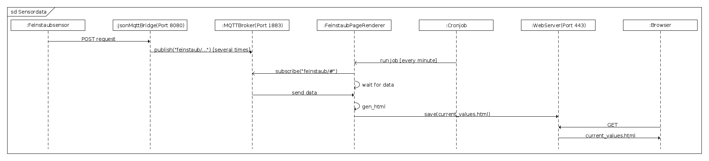

Der Sensor wurde im Jahr 2017 von Schülerinnen und Schülern
(Informationstechnische Assistenten) auf Grundlage des Projektes
luftdaten.info gebaut und
an einer E-Bike Garage in der Nähe des Haupteinganges der TBS1 in Bochum
montiert.
Dort wird er über einen Akku mit Strom versorgt und meldet sich an einem
Access Point im Internet an.
Die gesammelten Daten werden alle zwei Minuten in Form eines HTTP
POST-Request sowohl an die
öffentliche API von luftdaten.info gesendet, als auch an eine eigene
Anwendung - mehr dazu weiter unten.
Jeder POST-Request enthält die Daten im
JSON-Format
und ist wie das folgende Beispiel aufgebaut.
POST / HTTP/1.1
Host: 192.168.223.215
Content-Type: application/json
Authorization: Basic
X-PIN: 0
X-Sensor: esp8266-3394227
Content-Length: 412
Connection: close
{"esp8266id": "3394227", "software_version": "NRZ-2017-090",
"sensordatavalues":[{"value_type":"SDS_P1","value":"4.30"},
{"value_type":"SDS_P2","value":"3.53"},
{"value_type":"temperature","value":"20.80"},
{"value_type":"humidity","value":"52.30"},
{"value_type":"samples","value":"670215"},
{"value_type":"min_micro","value":"205"},
{"value_type":"max_micro","value":"505594"},
{"value_type":"signal","value":"-82"}]}
Diese JSON-Daten werden nun an einen eigenen API-Endpunkt gesendet - der
Quelltext ist in dem github-Projekt
json-mqtt-bridge
verfügbar. Wie der Name vermuten lässt, nimmt dieser Endpunkt die Daten
entgegen und leitet sie an einen
MQTT-Broker
weiter. MQTT ist ein u.a. von IBM entwickeltes offenes Protokoll,
das für die Übertragung von Sensordaten zwischen Maschinen entwickelt wurde.
An diesem Broker können sich wiederum andere Geärte anmelden und die an den
Broker gesendeten Daten abonnieren. Der Luftsensor sendet seine Daten
an das Topic "feinstaub/ebike" und darunterliegende Unterthemen. Eine
mögliche Ausgabe könnte wie folgt aussehen
'feinstaub/ebike/sensordatavalues/0/value_type' 'SDS_P1'
'feinstaub/ebike/sensordatavalues/0/value' '5.37'
'feinstaub/ebike/sensordatavalues/1/value_type' 'SDS_P2'
'feinstaub/ebike/sensordatavalues/1/value' '1.73'
'feinstaub/ebike/sensordatavalues/2/value_type' 'temperature'
'feinstaub/ebike/sensordatavalues/2/value' '21.50'
'feinstaub/ebike/sensordatavalues/3/value_type' 'humidity'
'feinstaub/ebike/sensordatavalues/3/value' '50.70'
'feinstaub/ebike/sensordatavalues/4/value_type' 'samples'
'feinstaub/ebike/sensordatavalues/4/value' '701375'
'feinstaub/ebike/sensordatavalues/5/value_type' 'min_micro'
'feinstaub/ebike/sensordatavalues/5/value' '199'
'feinstaub/ebike/sensordatavalues/6/value_type' 'max_micro'
'feinstaub/ebike/sensordatavalues/6/value' '463871'
'feinstaub/ebike/sensordatavalues/7/value_type' 'signal'
'feinstaub/ebike/sensordatavalues/7/value' '-77'
'feinstaub/ebike/software_version' 'NRZ-2017-092'
'feinstaub/ebike/esp8266id' '3394227'
'feinstaub/ebike/stats/last_update' '2017-06-30 15:20:15.439055'
'feinstaub/ebike/stats/interval' '120'
Andere Anwendungen können sich nun auf die unterschiedlichen
Topics bei dem Broker abonnieren und kreativ darauf reagiren. Der Broker
informiert die Anwendungen nämlich, sobald
es neue Nachrichten in dem Topic gibt.
Eine Beispielanwendung generiert aus diesen Topics die Webseite
it.tbs1.de/luftdaten für die
Darstellung der Livedaten. Das Projekt befindet sich ebenfall bei github
unter dem Namen
luftdaten.tbs1.de
Hierbei handelt es sich um ein Python-Script, das in jeder Minute
von einem
Cronjob
gestartet wird, sich beim MQTT-Broker über die aktuellen Werte informiert
und anschließend die Webseite aus einem Template generiert. Die Webseite
wird auf dem Webserver abgelegt und kann dann von einem Browser abgerufen
werden.
Die folgende Abbildung zeigt den gesamten Verlauf noch einmal in einer
Übersicht.
